File list
From Multi Theft Auto: Wiki
This special page shows all uploaded files.
| Date | Name | Thumbnail | Size | Description | Versions |
|---|---|---|---|---|---|
| 07:48, 27 December 2011 | 022client.png (file) | 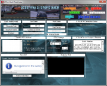 | 421 KB | Large version of MTA 0.2.2 for GTA3. | 1 |
| 22:18, 23 December 2011 | MTAMA1221.gif (file) | 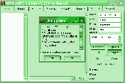 | 20 KB | Screenshot of MTA:mA 1.221. | 1 |
| 22:07, 22 December 2011 | MTALogo 8ball.png (file) | 99 KB | New icon for MTA's older versions. | 1 | |
| 18:35, 30 July 2010 | 0.5 installer selection.png (file) | 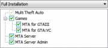 | 4 KB | 2 | |
| 18:31, 30 July 2010 | Mtaserverbrowser0.5.png (file) | 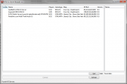 | 54 KB | 1 | |
| 21:14, 30 April 2010 | GTA3 Uzi.png (file) |  |
4 KB | 1 | |
| 21:13, 30 April 2010 | GTA3 Shotgun.png (file) |  |
4 KB | 1 | |
| 21:13, 30 April 2010 | GTA3 Flame.png (file) |  |
4 KB | 1 | |
| 21:12, 30 April 2010 | GTA3 AK47.png (file) |  |
4 KB | 1 | |
| 21:10, 30 April 2010 | SSV Scramble.png (file) | 1.98 MB | 1 | ||
| 20:58, 30 April 2010 | GTA3shotgun.jpg (file) |  |
2 KB | 1 | |
| 02:11, 30 April 2010 | MTAS Heli Pilot.png (file) | 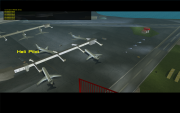 | 2.6 MB | 1 | |
| 02:11, 30 April 2010 | MTAS Spectator.png (file) | 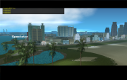 | 2.55 MB | 1 | |
| 02:10, 30 April 2010 | MTAS Packer Driver.png (file) | 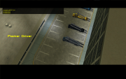 | 2.73 MB | 1 | |
| 02:09, 30 April 2010 | MTAS Bikers.png (file) |  |
3.28 MB | 1 | |
| 02:07, 30 April 2010 | MTAS Fun House Dept.png (file) | 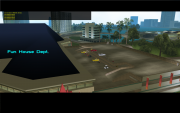 | 2.35 MB | 1 | |
| 02:07, 30 April 2010 | MTAS Speeders.png (file) | 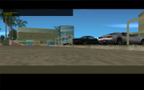 | 1.44 MB | 1 | |
| 02:06, 30 April 2010 | MTAS Yuppies.png (file) | 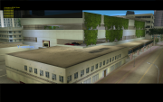 | 3.42 MB | 1 | |
| 02:05, 30 April 2010 | MTAS Dirt Racers.png (file) | 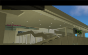 | 2.32 MB | 1 | |
| 23:17, 29 April 2010 | Gta3flame.jpg (file) |  |
2 KB | 1 | |
| 23:12, 29 April 2010 | Gta3 ssv speed.png (file) | 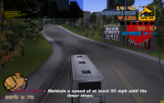 | 3.32 MB | 1 | |
| 22:14, 29 April 2010 | 0.5 welcome.png (file) | 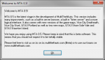 | 18 KB | 1 | |
| 22:10, 29 April 2010 | 0.5 eula.png (file) | 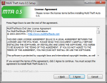 | 43 KB | 1 | |
| 22:10, 29 April 2010 | 0.5 installer.png (file) | 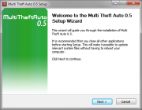 | 66 KB | 1 | |
| 22:08, 29 April 2010 | Mtaipport.png (file) | 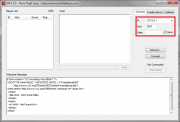 | 48 KB | 1 |
{kind=link}
{kind=link}
{kind=link}
{kind=link}
{kind=link}
{kind=link}
{kind=link}
{kind=link}
{kind=link}
{kind=link}
{kind=link}
{kind=link}
{kind=link}
{kind=link}
{kind=link}
{kind=link}
{kind=link}
{kind=link}
{kind=link}